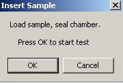

A message box prompts you to insert the
dry
sample. Insert the sample as described below then click
OK
to begin the test.

Place the dry sample in the bottom of the sample chamber. Make sure it completely covers the O ring. If it does not, place one of the adapter plates in the bottom of the chamber, place the sample on the smaller O ring of the adapter, and place the matching adapter plate on top of the sample. Place the thick spacing insert in the chamber. It should press far enough into the chamber so that the O ring on its side will pass below the upper rim of the chamber, but not so far that the entire insert is below the rim.
Screw the chamber cap onto the chamber and hand-tighten to the point where the O ring on the top of the spacing insert is compressed against the chamber cap.
Caution: Over-tightening the cap can cause the cap and spacing insert to seize. If this happens, the sample chamber must be replaced. Over-tightening may also damage the sample.
Connect the air hose.

 Select the Group menu option.
Choose Select Group to use an existing group.
Select the Group menu option.
Choose Select Group to use an existing group.